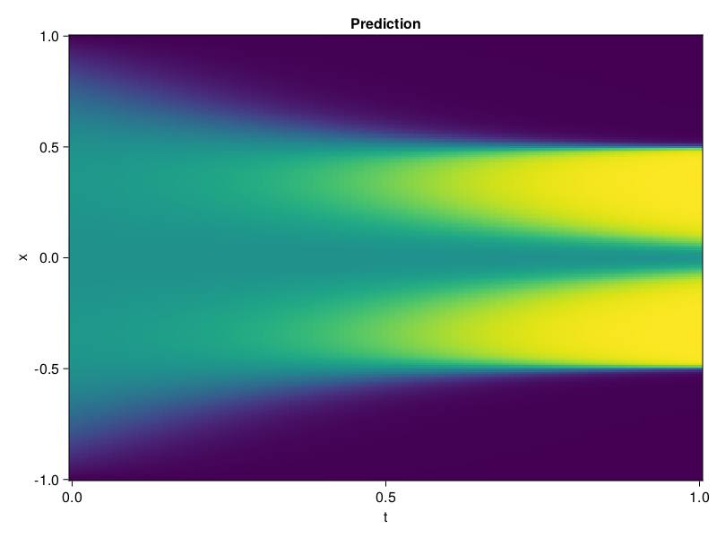

Allen-Cahn Equation with Sequential Training
In this tutorial we are going to solve the Allen-Cahn equation with periodic boundary condition from $t=0$ to $t=1$. The traning process is split into four stages, namely $t\in [0,0.25]$, $t\in [0.0,0.5]$, $t\in [0.0,0.75]$ and $t\in [0.0, 1.0]$.
using ModelingToolkit, IntervalSets
using Sophon
using Optimization, OptimizationOptimJL
@parameters t, x
@variables u(..)
Dₓ = Differential(x)
Dₓ² = Differential(x)^2
Dₜ = Differential(t)
eq = Dₜ(u(x, t)) - 0.0001 * Dₓ²(u(x, t)) + 5 * u(x,t) * (abs2(u(x,t)) - 1.0) ~ 0.0
domain = [x ∈ -1.0..1.0, t ∈ 0.0..0.25]
bcs = [u(x,0) ~ x^2 * cospi(x),
u(-1,t) ~ u(1,t)]
@named allen = PDESystem(eq, bcs, domain, [x, t], [u(x, t)])\[ \begin{align} - 0.0001 \frac{\mathrm{d}^{2}}{\mathrm{d}x^{2}} u\left( x, t \right) + 5 \left( -1.0 + \left|u\left( x, t \right)\right|^{2} \right) u\left( x, t \right) + \frac{\mathrm{d}}{\mathrm{d}t} u\left( x, t \right) =& 0.0 \end{align} \]
Then we define the neural net, the sampler, and the training strategy.
chain = FullyConnected(2, 1, tanh; hidden_dims=16, num_layers=4)
pinn = PINN(chain)
sampler = QuasiRandomSampler(500, (300, 100))
strategy = NonAdaptiveTraining(1, (50, 1))
prob = Sophon.discretize(allen, pinn, sampler, strategy)OptimizationProblem. In-place: true
u0: ComponentVector{Float64}(layer_1 = (weight = [-0.074557825922966 1.4060724973678589; 2.0002496242523193 -0.03173111751675606; … ; 0.7287119626998901 -0.4702050983905792; 1.7275481224060059 0.1731298863887787], bias = [0.0; 0.0; … ; 0.0; 0.0;;]), layer_2 = (weight = [0.6304798126220703 -0.21618704497814178 … 0.5448339581489563 -0.42290163040161133; -0.3855423629283905 -0.18846817314624786 … 0.49570852518081665 0.5532271265983582; … ; -0.4620645344257355 0.09136242419481277 … -0.28409355878829956 0.6436296701431274; 0.5935628414154053 -0.22708487510681152 … 0.2541112005710602 0.0451352559030056], bias = [0.0; 0.0; … ; 0.0; 0.0;;]), layer_3 = (weight = [-0.5170015692710876 0.17757506668567657 … -0.44189780950546265 -0.47959551215171814; -0.3235495090484619 -0.41267457604408264 … -0.6331465840339661 -0.03422434628009796; … ; -0.4945022761821747 0.5700273513793945 … -0.5223156809806824 0.26971280574798584; 0.6040847897529602 -0.4048842191696167 … -0.6249898672103882 0.4017085134983063], bias = [0.0; 0.0; … ; 0.0; 0.0;;]), layer_4 = (weight = [0.7165200114250183 0.3957582116127014 … 0.5739907622337341 0.6359623670578003; 0.18868307769298553 -0.7109545469284058 … 0.2752801179885864 0.17886106669902802; … ; 0.30798959732055664 -0.2181003838777542 … 0.12924501299858093 0.1532575488090515; 0.5054238438606262 -0.41446051001548767 … 0.2422151267528534 0.3005848526954651], bias = [0.0; 0.0; … ; 0.0; 0.0;;]), layer_5 = (weight = [-0.652947723865509 0.13118959963321686 … 0.20772665739059448 0.1599688082933426], bias = [0.0;;]))We solve the equation sequentially in time.
function train(allen, prob, sampler, strategy)
bfgs = BFGS()
res = Optimization.solve(prob, bfgs; maxiters=2000)
for tmax in [0.5, 0.75, 1.0]
allen.domain[2] = t ∈ 0.0..tmax
data = Sophon.sample(allen, sampler)
prob = remake(prob; u0=res.u, p=data)
res = Optimization.solve(prob, bfgs; maxiters=2000)
end
return res
end
res = train(allen, prob, sampler, strategy)u: ComponentVector{Float64}(layer_1 = (weight = [0.3240084747151979 1.3528658879743833; 3.3469566609561205 -0.38535022684095926; … ; 0.9840345805824292 -0.8655780293578655; 3.1471288247329814 0.27648458146172805], bias = [0.31552251990912317; -0.9397394612046239; … ; 1.5158114578320252; 1.0129106019494427;;]), layer_2 = (weight = [0.30103974300879954 -0.612203409193544 … 1.0592510935690458 -0.8869465402792077; -0.40447870775183153 0.15970667743075775 … 1.0203274615222333 0.09340723338031702; … ; -0.6169081216919313 -0.3539826730269395 … -0.8780651135036812 0.6232614121076379; 0.6143030929190127 -0.42289897767860307 … 0.40418411319605013 -0.022641673370529313], bias = [0.05570393166904562; 0.1644193368094953; … ; -0.6226223042632713; -0.16078490890853145;;]), layer_3 = (weight = [-1.1427754608669514 0.16036113640829341 … -0.38103765531600786 -0.35803880768982216; -0.49722712631319976 -0.34409613033446224 … -1.1045577420082442 -0.09245670248361504; … ; -0.8254506257624744 0.2235384654109751 … -0.7921076350626939 0.41811152443355765; 0.3851283653543579 -0.3456950219170522 … -1.5948710511419826 0.28619720696947826], bias = [-0.47361683698046964; 0.24908568212554988; … ; -0.18702661332009246; -0.3728597747372357;;]), layer_4 = (weight = [0.8766253919769808 -0.2179229308983339 … 0.2188960645775012 0.40896765848128963; 0.11495172263217023 -1.050491485625967 … 0.6430077110336522 0.22436626779500618; … ; 0.3129363784699823 -0.05252237258757471 … 0.23052131030442607 0.257215194141671; 0.7084407044047871 -0.35558978460860224 … 0.7653425645956352 0.533020710510078], bias = [-0.019687945246944505; -0.13592010661001175; … ; 0.020878137544124636; -0.13487643909471211;;]), layer_5 = (weight = [-0.573557209491312 0.442921720122458 … -0.13561738301175671 0.4621921424886644], bias = [-0.6405241294879015;;]))Let's plot the result.
using CairoMakie
phi = pinn.phi
xs, ts = [infimum(d.domain):0.01:supremum(d.domain) for d in allen.domain]
axis = (xlabel="t", ylabel="x", title="Prediction")
u_pred = [sum(pinn.phi([x, t], res.u)) for x in xs, t in ts]
fig, ax, hm = heatmap(ts, xs, u_pred', axis=axis)